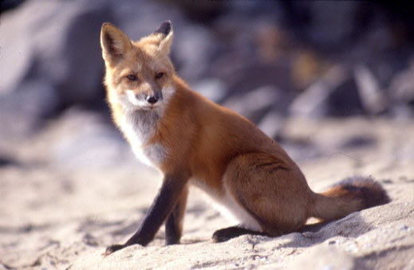

kenmerken
De vossenvacht is over het algemeen roodbruin, maar kan ook beige tot helderrood zijn, of zilverkleurig tot zwart (vooral in de bergen). De donkere variëteiten hebben soms andere namen, zoals brandvos of kruisvos.[3][4][5] Ook albino's komen voor. De oren zijn aan de achterzijde zwart, evenals de "sokken", de onderbenen. Sommige dieren hebben een witte staartpunt; veel vossen hebben in ieder geval enkele witte haren rond het puntje van de staart. De bovenlip is wit, evenals de bef. Op de wangen zit bij veel vossen een zwarte of bruine "traandruppel". Sommige dieren hebben een staalgrijze keel en buik, met een witte ster op de borst. In de paartijd heeft het vrouwtje, de moervos, een roze glans over de vacht aan de onderzijde.
klik hier voor meer foto's van vossen
over vossen
vossen eten wel
- bessen
- kleinere prooidieren
- elkaar
- bomen
vossen eten niet
- metaal
- kruiwagens
- kleine kindjes
- tumors